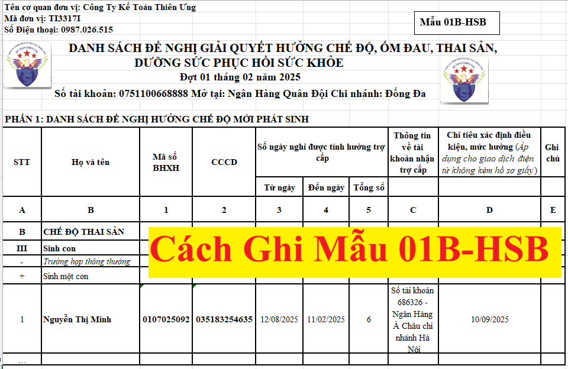

Hướng dẫn cách ghi Mẫu 01B-HSB Danh sách đề nghị hưởng Chế độ thai sản, ốm đau, dưỡng sức sau sinh, phục hồi sức khỏe; Cách điền mẫu 01-HSB theo Quyết định 222/QĐ-BHXH mới nhất năm 2025 có hiệu lực từ ngày 29/07/2025, chi tiết các trường hợp.

Tải mẫu 01B-HSB Excel tại đây:► Mẫu 01B-HSB theo Quyết định 2222
------------------------------------------------------------------------------------------
HƯỚNG DẪN LẬP, TRÁCH NHIỆM GHI DANH SÁCH ĐỀ NGHỊ GIẢI QUYẾT HƯỞNG CHẾ ĐỘ ỐM ĐAU, THAI SẢN, DƯỠNG SỨC, PHỤC HỒI SỨC KHỎE (Mẫu số 01B-HSB)
1. Mục đích: Là căn cứ để giải quyết trợ cấp ốm đau, thai sản, dưỡng sức, phục hồi sức khỏe đối với người lao động trong đơn vị.
2. Phương pháp lập và trách nhiệm ghi
2. Phương pháp lập và trách nhiệm ghi
Danh sách này do đơn vị lập cho từng đợt đảm bảo thời hạn quy định tại các Điều 48, 49, 62, 63 Luật BHXH năm 2024.
Góc trên, bên trái của danh sách phải ghi rõ tên đơn vị, mã số đơn vị đăng ký tham gia BHXH, số điện thoại liên hệ.
Phần đầu: Ghi rõ đợt trong tháng, năm đề nghị xét duyệt; số hiệu tài khoản, ngân hàng để làm cơ sở cho cơ quan BHXH chuyển tiền (trong trường hợp người lao động không có tài khoản cá nhân).
Cơ sở để lập danh sách ở phần này là hồ sơ giải quyết chế độ ốm đau, thai sản, dưỡng sức, phục hồi sức khỏe và bảng chấm công, bảng lương trích nộp BHXH của đơn vị.
Phần đầu: Ghi rõ đợt trong tháng, năm đề nghị xét duyệt; số hiệu tài khoản, ngân hàng để làm cơ sở cho cơ quan BHXH chuyển tiền (trong trường hợp người lao động không có tài khoản cá nhân).
Cơ sở để lập danh sách ở phần này là hồ sơ giải quyết chế độ ốm đau, thai sản, dưỡng sức, phục hồi sức khỏe và bảng chấm công, bảng lương trích nộp BHXH của đơn vị.
Lưu ý: Khi lập danh sách này phải phân loại chế độ phát sinh theo trình tự ghi trong danh sách, những nội dung không phát sinh chế độ thì không cần hiển thị; Đối với trường hợp giao dịch điện tử kèm hồ sơ giấy, đơn vị tập hợp hồ sơ đề nghị hưởng chế độ của người lao động để nộp cho cơ quan BHXH theo trình tự ghi trong danh sách.
--------------------------------------------------------------
Trong các phụ lục được ban hành kèm theo Quyết định số 2222/QĐ-BHXH ngày 29/07/2025 của Bảo hiểm xã hội Việt Nam thì mẫu "01B-HSB Danh sách đề nghị giải quyết hưởng chế độ ốm đau, thai sản, dưỡng sức, phục hồi sức khỏe" và phía dưới mẫu này có hướng dẫn cách ghi Mẫu 01B-HSB như sau:
PHẦN 1: DANH SÁCH ĐỀ NGHỊ HƯỞNG CHẾ ĐỘ MỚI PHÁT SINHPhần này gồm danh sách người lao động đề nghị giải quyết hưởng chế độ mới phát sinh trong đợt.
Cột A: Ghi số thứ tự
Cột B: Ghi Họ và Tên của người lao động trong đơn vị đề nghị giải quyết trợ cấp BHXH.
Cột 1: Ghi mã số BHXH của người lao động trong đơn vị đề nghị giải quyết trợ cấp BHXH.
Cột 2: Ghi ngày/tháng/năm đầu tiên người lao động thực tế nghỉ việc hưởng chế độ theo quy định;
Cột 3: Ghi ngày/tháng/năm cuối cùng người lao động thực tế nghỉ việc hưởng chế độ theo quy định.
Cột 4:
- Ghi tổng số ngày thực tế người lao động nghỉ việc trong kỳ đề nghị giải quyết.
- Trường hợp hưởng chế độ thai sản: Nếu nghỉ việc dưới 01 tháng ghi tổng số ngày nghỉ, nếu nghỉ việc trên 01 tháng ghi số tháng nghỉ và số ngày lẻ nếu có. Ví dụ: Người lao động thực tế nghỉ việc 10 ngày đề nghị giải quyết hưởng chế độ thì ghi: 10; Người lao động thực tế nghỉ việc 01 tháng 10 ngày đề nghị giải quyết hưởng chế độ thì ghi 1-10.
- Cộng tổng ở từng loại chế độ.
- Trường hợp ốm đau người lao động có thời gian nghỉ nửa ngày thì ghi nửa ngày là 0.5.
Ví dụ: Người lao động có thời gian nghỉ hưởng chế độ ốm đau như sau: Ngày 01/8/2025 và nửa ngày 02/8/2025 thì cột 2 ghi ngày 01/8/2025, cột 3 ghi ngày 02/8/2025, cột 4 ghi 1.5.
Cột C: Ghi mã hồ sơ đối với những hồ sơ được các Bộ, Ngành chia sẻ dữ liệu điện tử ký số.
Cột D: Ghi số tài khoản, tên ngân hàng; trường hợp người lao động không có tài khoản cá nhân thì bỏ trống.
Cột E:
- Đối với trường hợp hưởng chế độ ốm đau, khám thai:
+ Trường hợp ngày nghỉ hàng tuần của người lao động không rơi vào ngày nghỉ hàng tuần theo quy định chung (ngày thứ Bảy và Chủ nhật) thì cần ghi rõ. Ví dụ: Ngày nghỉ hàng tuần vào ngày thứ Hai, thứ Năm hoặc Chủ nhật thì ghi: T2, T5 hoặc CN.
Trường hợp các ngày nghỉ lễ, nghỉ tết đơn vị được phép lựa chọn ngày nghỉ lễ, Tết trước và sau ngày nghỉ chính thì ghi rõ thời gian nghỉ lễ: VD Nghỉ lễ 2/9 (1-2/9 hay 2-3/9).
+ Trường hợp người lao động làm việc ở vùng có điều kiện kinh tế - xã hội đặc biệt khó khăn thì ghi: ĐBKK.
+ Trường hợp con ốm: Ghi mã thẻ BHYT của con.
+ Trường hợp nghỉ ốm nửa ngày: Ghi rõ các ngày người lao động nghỉ nửa ngày, ghi rõ thời gian nghỉ ốm nửa ngày từ giờ nào đến giờ nào (đúng theo thời gian nghỉ việc nửa ngày tại đơn vị sử dụng lao động).
Trường hợp các ngày nghỉ lễ, nghỉ tết đơn vị được phép lựa chọn ngày nghỉ lễ, Tết trước và sau ngày nghỉ chính thì ghi rõ thời gian nghỉ lễ: VD Nghỉ lễ 2/9 (1-2/9 hay 2-3/9).
+ Trường hợp người lao động làm việc ở vùng có điều kiện kinh tế - xã hội đặc biệt khó khăn thì ghi: ĐBKK.
+ Trường hợp con ốm: Ghi mã thẻ BHYT của con.
+ Trường hợp nghỉ ốm nửa ngày: Ghi rõ các ngày người lao động nghỉ nửa ngày, ghi rõ thời gian nghỉ ốm nửa ngày từ giờ nào đến giờ nào (đúng theo thời gian nghỉ việc nửa ngày tại đơn vị sử dụng lao động).
- Đối với trường hợp hưởng chế độ thai sản:
+ Trường hợp khám thai: Ghi rõ ngày nghỉ hàng tuần như trường hợp hưởng chế độ ốm đau.
+ Trường hợp mẹ chết sau khi sinh và mẹ gặp rủi ro không còn đủ sức khỏe để chăm sóc con sau khi sinh mà không tham gia BHXH bắt buộc: Ghi mã số BHXH hoặc số thẻ BHYT của mẹ hoặc của con.
+ Trường hợp lao động nữ mang thai hộ sinh từ 3 con trở lên, tính đến thời điểm giao đứa trẻ, đứa trẻ chết: Ghi số con được sinh.
+ Trường hợp người mẹ nhờ mang thai hộ nhận con: ghi như trường hợp lao động nữ mang thai hộ sinh con; Trường hợp người mẹ nhờ mang thai hộ không tham gia BHXH bắt buộc thì ghi mã số BHXH hoặc số thẻ BHYT của người mẹ nhờ mang thai hộ hoặc của con.
+ Trường hợp lao động nam, người chồng của lao động nữ mang thai hộ nghỉ việc khi vợ sinh con: Ghi rõ ngày nghỉ hàng tuần như trường hợp hưởng chế độ ốm đau và mã số BHXH.
+ Trường hợp lao động nam, người chồng của người mẹ nhờ mang thai hộ hưởng trợ cấp một lần khi vợ sinh con, nhận con khi nhờ mang thai hộ: Ghi số con được sinh, nhận; nếu vợ sinh, nhận một con thì không phải ghi số con và mặc nhiên được hiểu là vợ sinh, nhận 1 con. Đồng thời ghi CCCD của mẹ hoặc mã số BHXH hoặc số thẻ BHYT của người mẹ hoặc của con.
+ Trường hợp mẹ chết sau khi sinh và mẹ gặp rủi ro không còn đủ sức khỏe để chăm sóc con sau khi sinh mà không tham gia BHXH bắt buộc: Ghi mã số BHXH hoặc số thẻ BHYT của mẹ hoặc của con.
+ Trường hợp lao động nữ mang thai hộ sinh từ 3 con trở lên, tính đến thời điểm giao đứa trẻ, đứa trẻ chết: Ghi số con được sinh.
+ Trường hợp người mẹ nhờ mang thai hộ nhận con: ghi như trường hợp lao động nữ mang thai hộ sinh con; Trường hợp người mẹ nhờ mang thai hộ không tham gia BHXH bắt buộc thì ghi mã số BHXH hoặc số thẻ BHYT của người mẹ nhờ mang thai hộ hoặc của con.
+ Trường hợp lao động nam, người chồng của lao động nữ mang thai hộ nghỉ việc khi vợ sinh con: Ghi rõ ngày nghỉ hàng tuần như trường hợp hưởng chế độ ốm đau và mã số BHXH.
+ Trường hợp lao động nam, người chồng của người mẹ nhờ mang thai hộ hưởng trợ cấp một lần khi vợ sinh con, nhận con khi nhờ mang thai hộ: Ghi số con được sinh, nhận; nếu vợ sinh, nhận một con thì không phải ghi số con và mặc nhiên được hiểu là vợ sinh, nhận 1 con. Đồng thời ghi CCCD của mẹ hoặc mã số BHXH hoặc số thẻ BHYT của người mẹ hoặc của con.
PHẦN 2: DANH SÁCH ĐỀ NGHỊ ĐIỀU CHỈNH SỐ ĐÃ ĐƯỢC GIẢI QUYẾT
Phần danh sách này được lập đối với người lao động đã được cơ quan BHXH giải quyết hưởng trợ cấp trong các đợt trước nhưng do tính sai mức hưởng hoặc phát sinh về hồ sơ, về chế độ hoặc tiền lương... làm thay đổi mức hưởng, phải điều chỉnh lại theo quy định.
Cột A, B, 1, C: Ghi như hướng dẫn tại Phần I.
Cột 2: Ghi Đợt/tháng/năm cơ quan BHXH đã xét duyệt được tính hưởng trợ cấp trước đây trên Danh sách giải quyết hưởng chế độ ốm đau, thai sản, dưỡng sức, phục hồi sức khỏe (mẫu C70a-HSB tương ứng đợt xét duyệt lần trước của cơ quan BHXH) mà có tên người lao động được đề nghị điều chỉnh trong đợt này. Ví dụ: Đợt 3 tháng 02 năm 2026 thì ghi: 3/02/2026.
Cột 3: Ghi lý do đề nghị điều chỉnh như:
+ Điều chỉnh tăng mức hưởng trợ cấp do đơn vị chưa kịp thời báo tăng; do người lao động mới nộp thêm giấy ra viện…
+ Điều chỉnh giảm mức hưởng trợ cấp do giảm mức đóng BHXH nhưng đơn vị chưa báo giảm kịp thời, đơn vị lập nhầm chế độ hưởng, lập trùng hồ sơ; xác định không đúng số ngày nghỉ hưởng trợ cấp...
Phần cuối danh sách phải có chữ ký số của Thủ trưởng đơn vị là người chịu trách nhiệm về các thông tin nêu trong danh sách; trường hợp đơn vị không thực hiện giao dịch điện tử thì Thủ trưởng đơn vị ký, ghi rõ họ tên và đóng dấu.
+ Điều chỉnh giảm mức hưởng trợ cấp do giảm mức đóng BHXH nhưng đơn vị chưa báo giảm kịp thời, đơn vị lập nhầm chế độ hưởng, lập trùng hồ sơ; xác định không đúng số ngày nghỉ hưởng trợ cấp...
Phần cuối danh sách phải có chữ ký số của Thủ trưởng đơn vị là người chịu trách nhiệm về các thông tin nêu trong danh sách; trường hợp đơn vị không thực hiện giao dịch điện tử thì Thủ trưởng đơn vị ký, ghi rõ họ tên và đóng dấu.
PHẦN 3: DANH SÁCH ĐIỀU CHỈNH THÔNG TIN VỀ TÀI KHOẢN NHẬN TRỢ CẤP
Phần danh sách này được lập điều chỉnh lại thông tin về tài khoản nhận trợ cấp của đơn vị sử dụng lao động và người lao động tại đơn vị do kê khai sai thông tin theo yêu cầu của cơ quan BHXH tại mẫu số 1a-CBH, ...
1. Điều chỉnh thông tin về tài khoản của đơn vị sử dụng lao động
Cột 1: Ghi Đợt/tháng/năm đã đề nghị cơ quan BHXH xét duyệt được tính hưởng trợ cấp đối với người lao động trên Danh sách đề nghị giải quyết hưởng chế độ ốm đau, thai sản, trợ cấp dưỡng sức phục hồi sức khỏe (Mẫu 01B-HSB) trước đó mà bị sai thông tin về tài khoản nhận trợ cấp của đơn vị.
Cột 2: Ghi lý do điều chỉnh: Điều chỉnh theo đề nghị của cơ quan BHXH…(ghi tên cơ quan BHXH)
Cột A, B, C: Ghi thông tin về tài khoản nhận trợ cấp điều chỉnh đúng.
2. Điều chỉnh thông tin về tài khoản của người lao động
Cột A, B, 1, : Ghi như hướng dẫn tại Phần I.
Cột 2: Ghi Đợt/tháng/năm đã đề nghị cơ quan BHXH xét duyệt được tính hưởng trợ cấp đối với người lao động trên Danh sách đề nghị giải quyết hưởng chế độ ốm đau, thai sản, trợ cấp dưỡng sức phục hồi sức khỏe trước đó mà bị sai thông tin về tài khoản nhận trợ cấp của đơn vị.
Cột 3: Ghi lý do điều chỉnh: Điều chỉnh theo đề nghị của cơ quan BHXH…(ghi tên cơ quan BHXH)
Cột C, D, E: Ghi thông tin về tài khoản nhận trợ cấp điều chỉnh đúng.
Ghi chú: Trong quá trình thực hiện, mẫu này và nội dung hướng dẫn lập mẫu có thể được sửa đổi, bổ sung bằng văn bản cá biệt cho phù hợp với yêu cầu phát sinh trong thực tiễn theo hướng dẫn của BHXH Việt Nam.
----------------------------------------------------------------------------------------
-----------------------------------------------------------------------
Kế toán Diệu Tâm xin chúc các bạn thành công!
Các bạn muốn học thực hành làm kế toán tổng hợp trên chứng từ thực tế, thực hành xử lý các nghiệp vụ hạch toán, tính thuế, kê khai thuế GTGT. TNCN, TNDN... tính lương, trích khấu hao TSCĐ....lập báo cáo tài chính, quyết toán thuế cuối năm ... thì có thể tham gia: Lớp học thực hành kế toán thực tế tại Kế toán Diệu Tâm
--------------------------------------------------------------------------------------------------------